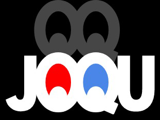

<mat-sidenav-container class="sidenav-container main_side_nav">
  <mat-sidenav #drawer class="sidenav" fixedInViewport="true"
      [attr.role]="(isHandset$ | async) ? 'dialog' : 'navigation'"
      [mode]="(isHandset$ | async) ? 'over' : 'side'"
      [opened]="!(isHandset$ | async)">
    <mat-toolbar>
      <span class="nav-image" routerLink="/dashboard">
        
        </span>
    </mat-toolbar>
    <mat-nav-list>
     <a mat-list-item [routerLink]="['/admindashboard']" >Dashboard</a>
      <!--   <a mat-list-item routerLink="/adminlist">Admin List</a>
        <a mat-list-item routerLink="#">User List</a>
        <a mat-list-item routerLink="#">User Management</a>
        <a mat-list-item routerLink="#">Brand Management</a>
        <a mat-list-item routerLink="#">Products List</a>-->
      <a mat-list-item [routerLink]="['/addgame']" *ngIf="cookieService.get('type')=='admin'">Add Game</a>
      <a mat-list-item [routerLink]="['/joqulist']">Joqu List</a>
      <a mat-list-item [routerLink]="['/gamelist']">Game List</a>
      <a mat-list-item [routerLink]="['/usergamelist']">User Game List</a>
      <a mat-list-item [routerLink]="['/gamecategoryadd']">Game Category</a>
      <a mat-list-item (click)="logout()">Logout</a>
    </mat-nav-list>
  </mat-sidenav>
  <mat-sidenav-content>
    <mat-toolbar color="primary" class="toolbar_header">
      <button
        type="button"
        aria-label="Toggle sidenav"
        mat-icon-button
        (click)="drawer.toggle()"
        *ngIf="isHandset$ | async">
        <mat-icon aria-label="Side nav toggle icon">menu</mat-icon>
      </button>
      <!--<span>joqu</span>-->
    </mat-toolbar>
    <!-- Add Content Here -->
    <ng-content></ng-content>
  </mat-sidenav-content>
</mat-sidenav-container>
